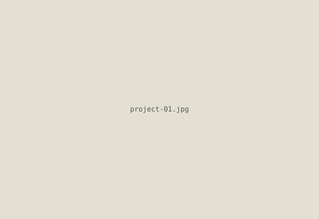
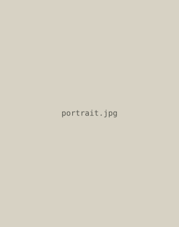

WINDEX
A hierarchical integration of site- and window-based statistics for characterizing the footprint of positive selection in genome-wide population genetic data.
Read our preprintI build methods to .
Recent contributions to my disseration as well as other relevant collaborations.

A hierarchical integration of site- and window-based statistics for characterizing the footprint of positive selection in genome-wide population genetic data.
Read our preprintOffline-first note capture for ecologists working without signal. Shipped to three research stations before we ran out of runway.
A minimal submissions and layout tool for independent literary magazines, now used by nine publications.
A scheduling system for a hospital radiology team, designed around interruptions rather than in spite of them.
A tiny web app for collecting book annotations across formats. Still the thing I get the nicest emails about.
Notes on process, mostly written for the version of me who'll hit the same problem again.
I've spent the last eight years designing software for people whose work is careful and unglamorous — archivists, field researchers, small editorial teams. Before that I trained as an illustrator, which mostly shows up now in how stubborn I am about typography.
I studied graphic design at RISD, then spent three years at a research lab building tools for scientists before going independent in 2022. These days I split my time between client work at Marrow Studio and writing about the parts of the process nobody puts in the case study.
Outside of work I bind books badly, run slowly, and keep a running list of restaurants I've been meaning to try.
